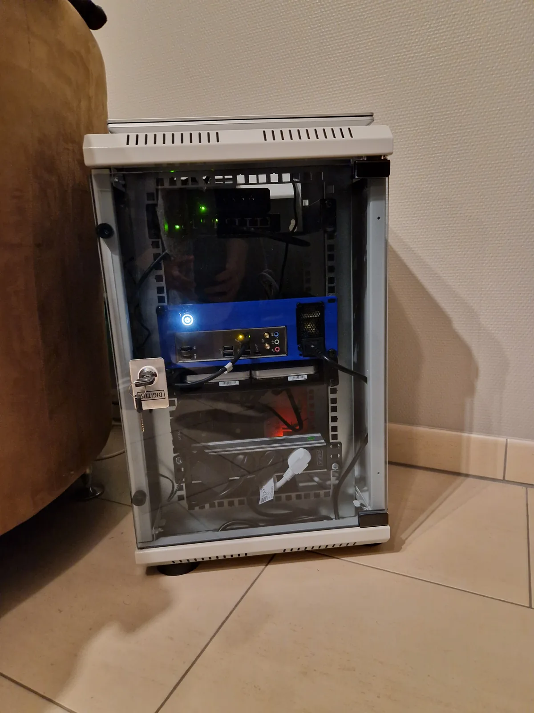

From Tiny Cluster to Full Rack
What started as a quiet Raspberry Pi cluster in my living room has grown into a four-node self-hosted platform: an ARM edge gateway in the cloud, an ARM home server, an x86_64 laptop for compute offload, and a dedicated ZFS NAS for storage. The on-site gear now lives in a compact 10U rack with monitored power and airflow, while public traffic still reaches the platform only through a self-operated WireGuard tunnel.

Current physical layout: a compact 10U rack
What Runs On It
The platform is now split across four complementary layers: the home-server control plane, an agent and worker layer, a dedicated storage/media plane, and a hardened edge gateway.
Cloud Gateway (Oracle VPS)
- Caddy at the edge: Automatic TLS, strict security headers, structured logs, compression, and route-level rate limits.
- CrowdSec inline filtering: Suspicious traffic is blocked before it ever reaches the backend.
- WireGuard backhaul: All public ingress crosses a self-operated VPN tunnel; the home server has zero direct internet exposure.
- Tailscale admin mesh: A separate VPN for remote SSH and development access that never carries public request traffic.
- Gateway API: A VPN-only internal API exposes threat and access-log data to backend tooling and the security agent.
Core Platform (Home Server)
- Unified backend control plane: FastAPI + SQLAlchemy + Alembic + SQLite drive authentication, permissions, app registration, audit logs, AI orchestration, and cross-app state.
- Passwordless, federated login: passkeys (WebAuthn/FIDO2) are the primary sign-in, on top of a from-scratch OIDC provider and an OAuth 2.0 consent flow — so other apps and AI assistants can log in with the platform.
- Real-time and generative surfaces: self-hosted voice/video rooms (LiveKit/WebRTC) and an AI keyframe video generator that turns a start and end frame into a short clip — both behind the same SSO and edge security.
- Custom product suite: Identity portal, app hub, admin console, content digest, vault, term-mastery, task log, career workspace, voice/video rooms, an AI video generator, a mail surface, and a QR generator microservice.
- Hard application kill switch: Every custom frontend is registered centrally, so disabling an app immediately blocks access even on direct URL visits.
- Platform CLI: A Typer-based Python CLI wraps the backend API for terminal workflows over VPN. Supports auth, task management, security operations, and health checks via Personal Access Tokens. Distributed through a self-hosted private PyPI server.
Agent + Worker Layer
- Retriever agent: Researches the web through a private meta-search backend and headless browsing, then returns structured briefs.
- Term-mastery agent: Generates summaries, flashcards, and remediation workflows for learning content.
- Security triage agent: Correlates edge alerts, access logs, sessions, and approval-gated write actions for admin review.
- Governance triage agent: watches internal session, permission, and account anomalies with a graded action policy — low-risk fixes auto-execute, high-blast-radius actions enter a human approval queue.
- Infrastructure monitoring agent: runs probes across nodes, containers, temperatures, and backup freshness, then an optional AI layer triages findings into a recovery-aware signal feed.
- Two run modes, tiered models: every agent runs as a cheap fixed pipeline or an adaptive LLM-driven loop; Mistral Small drives the decisions, Mistral Large the final synthesis.
- Shared guardrails: Every agent runs behind kill switches, token/cost/runtime budgets, tool allowlists, concurrency caps, and blocked-action logging.
K3s Cluster
- Traefik ingress: Host-based routing and a clean path to declarative microservice deployments.
- Portainer: Cluster visibility and day-to-day Kubernetes management.
- QR microservice: A React + Vite service running in K3s as the current reference workload for the cluster.
- Private multi-arch image flow: Images are prepared for ARM64 and x86_64 and distributed through a private registry workflow.
Storage + Media Plane (NAS)
- TrueNAS SCALE + ZFS: Separate storage node with mirrored HDD bulk storage, SSD hot tier, and service-specific datasets.
- Full self-hosted media: Jellyfin with hardware transcoding, fed by a Radarr/Sonarr/Jellyseerr/Bazarr/Jackett acquisition pipeline with ClamAV scanning; Immich for photos; Nextcloud for files; Navidrome + Lidarr + AudioMuse-AI for music.
- S3-compatible object storage: Dual MinIO tiers keep hot objects on SSD and move colder data to HDD through lifecycle rules.
Why I Built It
I needed a sandbox to break things safely. This was my first real personal project that pushed me beyond tutorials and into actual problem-solving. What started with Jellyfin for media streaming grew into a full platform after I built a custom secure tunnel to replace third-party services.
Beyond learning, I kept running into the same frustration: existing tools were either limited, ad-ridden, or just didn't fit what I needed. The QR generator? Most online versions were locked behind paywalls or covered in ads. The Vault app? Nothing out there matched the workflow I had in mind. So instead of settling, I started building my own — and that grew into a full self-hosted ecosystem of custom applications replacing third-party tools on my own terms.
Along the way I learned how to design around real constraints: mixed architectures, separate storage and compute planes, zero-trust ingress, and applications that share auth without sharing security shortcuts. I built 8+ custom apps and an agent framework from scratch, which proved to me that serious systems design is possible long before you have enterprise hardware.
Lessons Learned
ARM has quirks
Not all Docker images support ARM64. Finding compatible alternatives and tweaking configs taught me to read docs carefully.
DNS is powerful
Managing records in Cloudflare and understanding how traffic flows made the whole system click.
Start small, iterate fast
This setup grew organically. Each problem solved unlocked the next improvement.
Cost-conscious infrastructure
Running on low-power devices and free-tier cloud taught me to optimize before scaling.
Security is a journey
Implementing SSO, token blacklisting, and audit logging taught me that authentication is more than just passwords.
Hybrid architecture complexity
Coordinating Docker Compose and K3s on the same node, plus a remote VPS gateway, required careful port planning and network design.
Environment matters
With only one LAN outlet in the home, the cluster had to live in the living room. This constraint forced smart hardware choices: silent components, low-power ARM processors, and efficient cooling. Adapting to real-world limitations made me a better engineer.